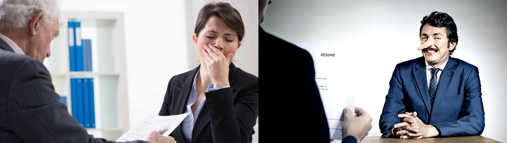
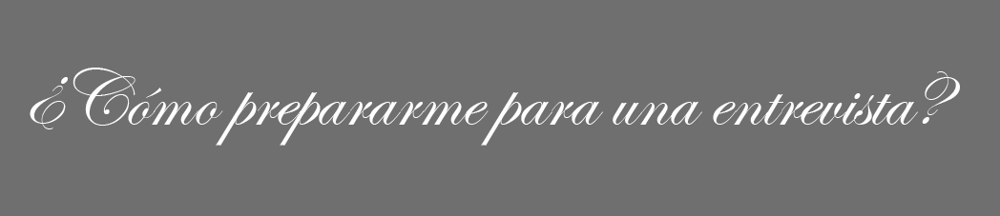
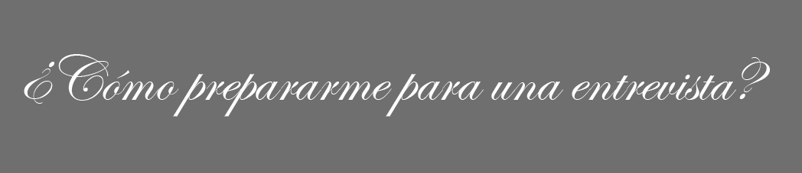

¿Qué no hacer en una entrevista?

 En el momento de afrontar una entrevista de trabajo, cada personas tiene sus trucos, sus estrategias y sus métodos para lograr transmitir lo mejor de sí. En principio, no hay ningún manual escrito que sirva de guía infalible para lograr la entrevista perfecta. Sin embargo, si que hay un listado de cosas que debes evitar a toda costa si no quieres echar a perder tu oportunidad.
Esto es lo que nunca debes hacer en una entrevista de trabajo:
- Llegar tarde.
La falta de puntualidad cuando ni siquiera has comenzado a trabajar ya da mala imagen de tí. Por regla general es recomendable llegar unos 5 o 10 minutos antes de la hora a la que estás citado, para evitar imprevistos que te hagan llegar tarde. Si no sabes llegar al sitio, infórmate antes de salir.
- Presentarte mal vestido o sin arreglar.
La imagen dice mucho de tí, así que cuando te presentes en una entrevista, ten en cuenta la imagen de la empresa y arréglate conforme a ella. No es necesario ir siempre de traje, esto depende de cada empresa, pero si que hay que procurar mostrar una imagen profesional y fiable.
- No haber preparado la entrevista laboral.
unque no sepamos exactamente lo que nos van a preguntar, sí podemos preparar las preguntas más frecuentes en una entrevista de trabajo. Es un ejercicio previo muy recomendable.
- Ir acompañado.
Aparecer en la entrevista acompañado de amigos, padres, familiares, da imagen de poca independencia e iniciativa. Evítalo.
- Provocar interrupciones.
Siempre que acudas a una entrevista de trabajo asegúrate de tener apagado el teléfono móvil o celular, ya que podría sonarte en mitad de la charla, provocando una situación incómoda. Mentalízate: en ese momento no hay nada más importante que la entrevista.
- Mostrar los nervios, la ansiedad o el estrés.
El lenguaje corporal también cuenta para el entrevistador, así que evita cualquier gesto que denote tu estado de ánimo, especialmente si éste es negativo: morderse las uñas, revolverse en la silla, dar golpecitos con el bolígrafo.
- Estar pendiente del tiempo.
Mirar constantemente el reloj da imagen de ansiedad y de que se tienen cosas más importantes que hacer. Relájate y muéstrate confiado.
- Mostrar desgana, desprecio o pesimismo.
No importa que realmente no sea lo que esperabas o haya cosas que no estés de acuerdo, procura ser positivo y ver la cara buena de cada situación. Sonríe y procura crear empatía.
- Centrarse en el tema económico.
La entrevista de trabajo no es el momento adecuado para negociar las remuneraciones ni los salarios. Centrarse demasiado en el aspecto monetario causa una mala imagen ante el entrevistador y puede ser contraproducente. Si es necesario, pregunta, pero sé discreto, no parezcas ansioso.
- Ser descortés.
Agradece a la empresa y al entrevistador la oportunidad que te brindan, resalta los aspectos positivos y olvida los reproches.
- Mentir.
Es habitual hacerse la pregunta... ¿qué pasa si miento en una entrevista de trabajo?. Evidentemente si te pillan estarás descartado automáticamente del proceso de selección. Por tanto, no vale la pena mentir en la entrevista laboral.
 
